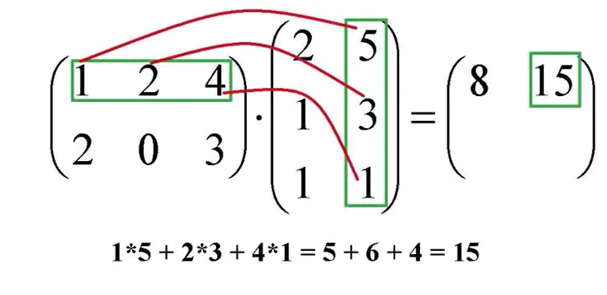
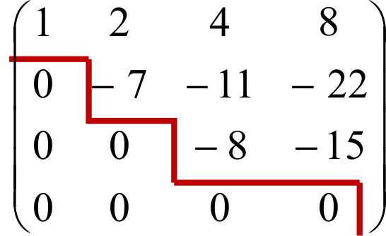
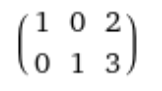

Произведением матриц A размер n x p и B размера p x k
называется матрица C типа n x k, где c_ij равно сумме попарных
произведение i-ой строки A и j-ого столбца. Умножение матриц некоммутативно,
т.е. A * B != B * A.

Ступенчатый вид матрицы - матрица, у которой номера первых ненулевых элементов (ведущих) всех строк
возрастают, а нулевые строки внизу матрицы.

Канонический вид матрицы - матрица ступенчатого вида, у которой ведущие элементы равны 0, а
а в столбце с ведущим все числа равны нулю кроме ведущего.
